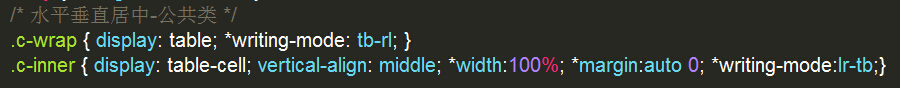

CSS水平垂直居中的一种通用策略
作者：Jade
时间：2014/08/23
正文：
你可能在别的地方听过「水平垂直居中的 N 种办法」，但在这里，只会认真介绍一种。基于它的特性，这种定位策略可以叫做「死活要居中」。
-
图片水平垂直自适应居中：
这是一个在 CSS 中比较困难的问题。主要难点在于 IE6 和 IE7 不支持 display 的 table-cell 属性，一般通过 line-height 的值来模拟；但也只能实现容器定高的情况。
看看「死活要居中」技术，能否通吃 IE6+，欢迎在各个浏览器中测试以下场景：

测试方式：点击图片，移动鼠标，进行缩放；再次点击图片，则取消。
-
多行文字水平垂直自适应居中：
单行文字的水平垂直居中，太过简单，不必多言；多行文字时的处理方式，就没那么容易了。
然而，这对「死活要居中」技术来说，轻而易举。在该死的 IE6 与 IE7 中尽情测试吧
我是一堆文字，不断增长的文字。我的父元素宽度为其父元素的60%。
测试方式：点击文本框，每个1秒，复制一次初始值；再次点击时取消。
-
普通块级元素水平垂直自适应居中：
这个应该是最经典的场景。「死活要居中」同样适用。
测试方式：点击色块，移动鼠标，进行缩放；再次点击色块，则取消。
-
一列与多列行内块级元素水平垂直自适应居中：
这种需求，是升级版的多行文字水平垂直居中，有时它会带来巨大麻烦。然而，「死活要居中」仍然表现得游刃有余。
测试方式：点击色块容器，每个1秒，复制一次色块；再次点击时取消。双击时，添加左浮动类名，再次双击是，则取消。
尽管上面的案例使用了一些 js，但它都与水平垂直自适应居中无关，仅仅添加节点或者改变元素的宽高罢。
案例有限，只反映了在固定宽高的容器内，元素的水平垂直自适应居中的情况。然而实际上，「死活要居中」策略也适用于容器宽高变化不定的情况。可在开放者工具中直接修改容器的尺寸，可见其效。
CSS实现原理：
总共需要三层元素。在支持 display 的 table 和 tabel-cell 的浏览器中，最外层为 display: table, 第二层为 display: table-cell; vertical-align: middle; 就能做到垂直居中。剩下的，当最里层为行内元素时，最外层设置 text-align 的值为 center 即水平居中。当最里层为块级元素时，其 margin 值为 0 auto 即水平居中。到这里，都是经典方案。
接下来，要对 IE6 和 IE7 做 hack 处理。知识点为：margin 的 关键字 auto。
一般情况下我们用它来实现块级元素的水平居中；因为默认情况下，文档的书写模式 writing-mode 是从左到右，遇边界则考虑折行，从上之下无限延展。左右有界，上下无边，auto 能根据左右之间明确的界限分配空间，而上下则不行，默认为 0。
当我们将书写模式改变为，从上到下，从右至左，像中国古诗词那样的排版方式时，auto 值就能上下均分剩余空间，左右的 auto 值则默认为0。
hack 方式呼之欲出，将最外层的书写模式设置为 writing-mode：tb-rl；第二层的 margin 设置为 auto 0；然后将书写模式恢复一般状态 writing-mode:lr-tb; 如此，第二层负责垂直居中，最里层负责水平居中，即大功告成。
将两种写法合并成公共类，就得到了「死活要居中」的 CSS 写法，如下图：
这种 hack 并非完美，也有副作用。
其一是，IE6 下背景图居中时，各种凌乱，如果你用了「死活要居中」，并且还需要设置背景图，最好的方法是在外部再包裹一层，不要将背景图放在书写模式非正常的元素中。如果你要兼容 IE6 的话。
其二是，在 IE6 和 IE7 中，即便最里层是块级元素，最外层的 text-align: center; 也能让它居中，有时这未必是我们要的效果。
还有其他一些问题，有待大家一起发掘。总的而言，「死活要居中」方案，能够胜任大多数场景，是为不错的选择。如果对该方法的使用细节还有疑问，请直接查看本文源码。